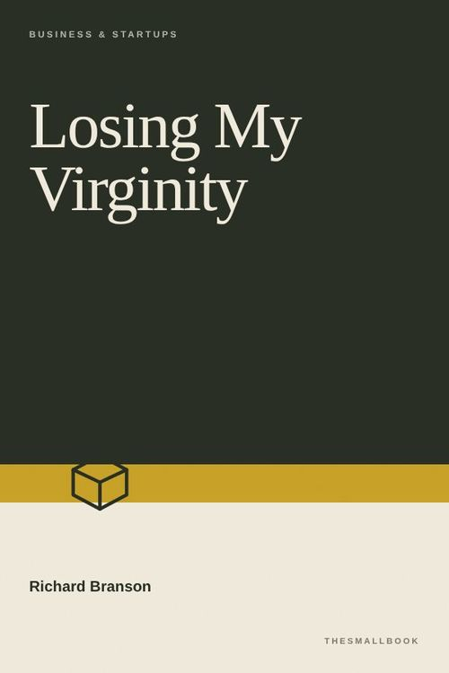

Why Did Yeezy Fail?
One Month of Statements Turned a $1.5 Billion Partnership Into a Write-Off
What happened
Yeezy was the most successful artist-brand partnership ever built: roughly $1.5-2 billion a year, about 8% of Adidas revenue, half of Ye's fortune. Then came the antisemitic statements in October 2022, and Adidas - after weeks of internal dithering and pressure from employees and athletes - ended the deal with immediate effect. Inventory worth a billion euros sat unsold; the eventual solution was selling pairs and donating proceeds. The brand's value was the partnership; the partnership had a morals clause for a reason.
The fatal mistake
Building hundreds of millions in annual profit on one uncontrolled personality with no containment structure - the risk was visible for years and priced at zero.
The lesson
Concentration in one volatile individual is not brand equity; it is unsecured lending. Contracts must carry the off-switch, and boards must be able to reach it.
The antidote book

Richard Branson's memoir of Student magazine, Virgin Records, the airline war against British Airways and the branded-venture empire, plus the rule that made it survivable.
READ THE SUMMARY OPEN INTERACTIVE BOOKQuestions people ask about Yeezy
Why did Yeezy fail? Building hundreds of millions in annual profit on one uncontrolled personality with no containment structure - the risk was visible for years and priced at zero.
How much was lost? Adidas cut the partnership overnight: a 1.5 billion euro hole in 2023 and hundreds of millions more; Ye lost his billionaire status in weeks
What is the lesson? Concentration in one volatile individual is not brand equity; it is unsecured lending. Contracts must carry the off-switch, and boards must be able to reach it.
Yeezy kyun fail hua? In simple English: Building hundreds of millions in annual profit on one uncontrolled personality with no containment structure - the risk was visible for years and priced at zero. The cost was Adidas cut the partnership overnight: a 1.5 billion euro hole in 2023 and hundreds of millions more; Ye lost his billionaire status in weeks.
Keep digging
More fame and fortune failures · Open the full Graveyard
Read the antidote book summary: Losing My Virginity
Related failures
- Why did Rana Kapoor fail? 2020 · 'Diamonds Are Forever' - Loans Weren't
- Why did Q Magazine fail? 2020 · The music monthly closes
- Why did V.G. Siddhartha fail? 2019 · The Coffee King Who Carried It Alone
- Why did Johnny Depp fail? 2017 · $30,000 a Month on Wine
- Why did Maria Sharapova fail? 2016 · A Diabetes Drug, a Missed Email, and $200 Million of Endorsements
- Why did Johnny Manziel fail? 2016 · The First-Round Talent Who Didn't Study the Playbook
Questions people ask about Yeezy
Why did Yeezy fail? Building hundreds of millions in annual profit on one uncontrolled personality with no containment structure - the risk was visible for years and priced at zero.
How much was lost? Adidas cut the partnership overnight: a 1.5 billion euro hole in 2023 and hundreds of millions more; Ye lost his billionaire status in weeks
What is the lesson? Concentration in one volatile individual is not brand equity; it is unsecured lending. Contracts must carry the off-switch, and boards must be able to reach it.
Yeezy kyun fail hua? In simple English: Building hundreds of millions in annual profit on one uncontrolled personality with no containment structure - the risk was visible for years and priced at zero. The cost was Adidas cut the partnership overnight: a 1.5 billion euro hole in 2023 and hundreds of millions more; Ye lost his billionaire status in weeks.
Keep digging
More fame and fortune failures · Open the full Graveyard
Read the antidote book summary: Losing My Virginity
Related failures
- Why did Rana Kapoor fail? 2020 · 'Diamonds Are Forever' - Loans Weren't
- Why did Q Magazine fail? 2020 · The music monthly closes
- Why did V.G. Siddhartha fail? 2019 · The Coffee King Who Carried It Alone
- Why did Playboy and the Empire the Internet Retired fail? 2017 · The Empire the Internet Retired
- Why did Johnny Depp fail? 2017 · $30,000 a Month on Wine
- Why did Harvey Weinstein and the System That Protected Him fail? 2017 · The Open Secret With an Office
They paid full price. You get the lesson in simple English.